De investigación. Propuesto por Juan Bosco Romero Márquez, profesor colaborador de la Universidad de Valladolid . Problema 285 Sea la circunferencia circunscrita a un triángulo rectángulo en el vértice A. Consideremos una ceviana arbitraria AA´, donde A´es su pie sobre el lado BC, y sea A*, el punto donde corta la circunferencia circunscrita. Por los vértices B y C, trazamos los segmentos BB* y CC* paralelos a AA´, y donde B* y C* son los puntos donde estos segmentos corta al circunferencia circunscrita cuyo centro es O. Probar que :
a) El triángulo A*B*C* es congruente o isométrico al triángulo ABC.
b) Si G y G* son los baricentros de los triángulos ABC y A*B*C*, entonces el segmento GG* es paralelo a AA* y es 1/3 de AA*.¿ Qué ocurre con los incentros de esos triángulos con relación a AA´?
c) Al variar la ceviana AA´sobre el lado BC se construyen infinitos triángulos congruentes a ABC. Se pide:
c1) Lugar geométrico descrito por todos los baricentros de esos triángulos. c2) Lugar geométrico descrito por todos los incentros de esos triángulos.
d) ¿Qué se podría decir si hacemos la construcción anterior para los catetos del triángulo rectángulo anterior?
e) ¿Qué se podría decir de todo lo anterior para un triángulo cualquiera, obtusángulo o acutángulo?
Solución de José María Pedret, Ingeniero Naval. Esplugues de Llobregat (Barcelona). (17 de diciembre de 2005) |
|
SOLUCIÓN |
|
APARTADO a)
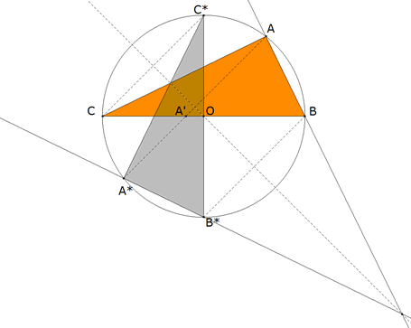 figura 1 método 1 (proyectivo): La construcción dada equivale a una homología del plano con centro en el punto de infinito de AA'. Como tal, es una simetría axial con eje el de homología que no es más que la perpendicular por O a la dirección AA'. La simetría axial es una isometría. método 2 (clásico):
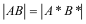
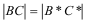
B*C* es un diámetro y A*, por definición, está sobre el círculo, entonces el ángulo en A* es recto.
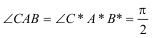
|
|
APARTADO b)
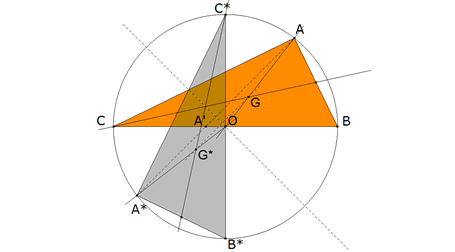 figura 2
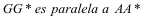
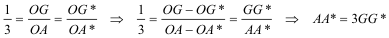
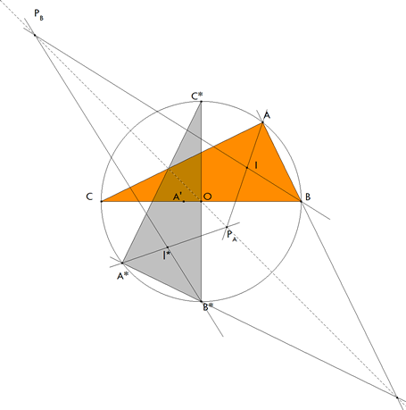 figura 3 Tomamos el incentro I de ABC como la intersección de la bisectriz en A y en B. La bisectriz por A corta al eje de homología en PA.
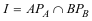
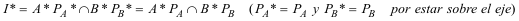 A*PA es la bisectriz en A* y B*PB es la bisectriz en B* ya que esta homología es una simetría axial y como tal, conserva los ángulos.
|
APARTADO c) subapartado c1
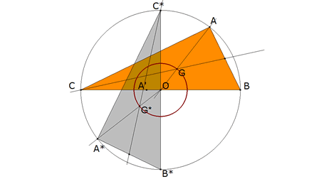 figura 4
El lugar geométrico de los baricentros es una círculo concéntrico al circunscrito. De radio OG, la tercera parte del circunscrito.
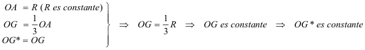
subapartado c2
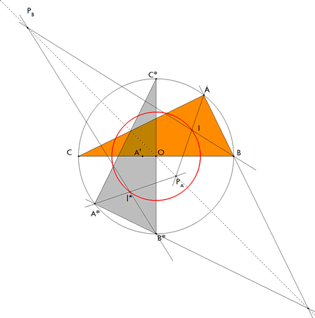 figura 5
Para el lugar de I*, debemos pensar que para cada posición de A' corresponde un nuevo eje de simetría que siempre pasa por O luego como
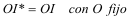
|
APARTADO d)
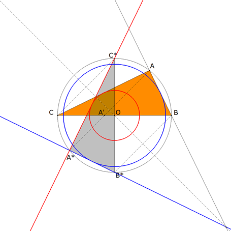 figura 6 Como a sucesivas posiciones de A' corresponden distintas isometrías, los distintos catetos conservarán siempre la misma longitud y por tanto definirán cuerdas de longitud constante que se desplazan por la circunferencia circunscrita.
|
|
APARTADO e) En todos los apartados, sólo se han usado relaciones de incidencia e igualdades de distancias después de la transformación y no se han usado en ningún momento las propiedades del triángulo rectángulo. En definitiva, la transformación descrita sigue siendo una isometría para cualquier triángulo. Se repetirán por tanto los mismos resultados que para el triángulo rectángulo; incluso para los lugares geométricos pues sólo hemos utilizado para establecerlos propiedades que se mantienen con las isometrías. En el único punto que interviene una característica del triángulo rectángulo es en la primera parte del apartado b; el punto medio de BC, que define la mediana y por tanto el baricentro, coincide con el circuncentro O. En este caso ya no podremos afirmar que GG* es la tercera parte de AA*. 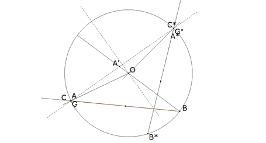 figura 7 Por ejemplo, en un triángulo general, a medida que A se aproxima a C (o B) G tiende a A y G* tiende a A* con lo que la relación tiende a 1.
|